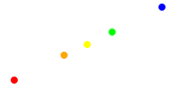

6.0.0.2
4 Bezier Curves
A Bezier curve from point A to point B with
control points A+ and B- is represented as
an instance of a bez structure: (bez A A+ B- B).
Graphically such a curve begins at point A and ends in point B.
The direction in which the curve leaves point A is directed towards
the control point A+. The direction in which the curve enters the
end point B is direction from B-.
The points A and B are referred to as start and end point
of the Bezier curve. The points A+ and B- are refererred
to as control points. The point A+ is the post control of A
and the point B- is the pre control of B.
Most users will not have reason to work with bez structures directly.
The curve constructor is intended to cover all use cases.
Each point on the Bezier curve is corresponds to a real number t between 0 and 1.
The correspondance is called a parametrization of the curve. The number t
is called a parameter. Thus for each value of the parameter t between 0 and 1,
you get a point on the curve. The parameter value t=0 corresponds to the start
point A and the parameter value t=1 corresponds to the end point.
Let’s see an example of a Bezier curve and its construction.

Return the point on the Bezier curve b that corresponds to the parameter value t.
De Casteljau’s algorithm is used to compute the point.
| > (def b (bez (pt 0 0) (pt 0 1) (pt 3 2) (pt 5 0))) |
|
|
(list (pt 0 0) (pt 7/4 9/8) (pt 5 0)) |
Returns #t if the defining points of the two Bezier curves
are within a distance of ε. The default value of ε=0.0001 was chosen
to mimick the precision of MetaPost.
Returns a
bez representing a Bezier curve whose graph is the same as
the graph of the Bezier curve
b, but has the reverse orientation.
| > (def b (bez (pt 0 0) (pt 0 1) (pt 3 2) (pt 5 0))) |
|
| > (def (γ t) (point-of-bez b t)) |
|
| > (def (φ t) (point-of-bez (bez-reverse b) t)) |
|
| > (def ts (in-range 0 5/4 1/4)) |
|
| > (cons 'γ (for/list ([t ts]) (γ t))) |
(list 'γ (pt 0 0) (pt 1/2 45/64) (pt 7/4 9/8) (pt 27/8 63/64) (pt 5 0)) |
| > (cons 'φ (for/list ([t ts]) (φ t))) |
(list 'φ (pt 5 0) (pt 27/8 63/64) (pt 7/4 9/8) (pt 1/2 45/64) (pt 0 0)) |
Given a Bezier curve
b from
p0 to
p3 with control
points
p1 and
p2, split the Bezier curve at time
t
in two parts
b1 (from
p0 to
b(
t)
) and
b2
(from
b(
t)
to
p3),
such that
(point-of-bez b1 1) =
(point-of-bez b2 0)
and the graphs of
b1 and
b2 gives the graph of
b.
| > (def b (bez (pt 0 0) (pt 0 1) (pt 3 2) (pt 5 0))) |
|
| > (defv (b1 b2) (split-bez b 1/3)) |
|
| > (with-window (window -1 6 -1 6) | | (penwidth 4 | | (draw (color "red" (draw b1)) | | (color "blue" (draw b2))))) |
|

|
Given a Bezier curve b return a new Bezier curve c,
such that c(0)=b(t0) and c(1)=b(t1) and
such that the graph of c is a subset of the graph of b.
| > (def b (bez (pt 0 0) (pt 0 1) (pt 3 2) (pt 5 0))) |
|
| > (with-window (window -1 6 -1 6) | | (for/draw ([t (in-range 0 5/4 1/4)] | | [c '("red" "blue" "green" "magenta")]) | | (penwidth 4 | | (beside (draw b) | | (color c (draw (bez-subpath b t (+ t 1/4)))))))) |
|
 |
Note: The example show that the parameterization is not an arc-length (aka unit-speed)
parameterization.
If the graphs of the Bezier curves intersect, then their
first intersection point is returned. If there are no intersections,
then #f is returned.
If the graphs of the Bezier curves intersect numbers t1 and t2
such that b1(t1)=b2(t2) are returned. If there are more than one
intersection, the parameter values for the first intersection is returned.
If no such numbers exist the result is (values #f #f).
If the graphs of the Bezier curves intersect a list of the intersection point
and two numbers t1 and t2 such that b1(t1)=b2(t2) is returned.
If there are more than one intersection, the parameter values for the first
intersection is returned. If no such numbers exist the result is (values #f #f).
| (draw-bez | | dc | | | | | | | | b | | | | | | | [ | #:transformation t | | | | | | | | #:pen-transformation pent]) | | → | | (void) |
|
| dc : (is-a dc<%>) |
| b : bez? |
| t : trans? = #f |
| pent : trans? = #f |
Draws the Bezier curve b on a drawing context dc with
optional transformation t and pen-transformation pent.
| (draw-bezs | | dc | | | | | | | | bs | | | | | | | [ | #:transformation t | | | | | | | | #:pen-transformation pent]) | | → | | (void) |
|
| dc : (is-a dc<%>) |
| bs : (listof bez?) |
| t : trans? = #f |
| pent : trans? = #f |
Draws the Bezier curves bs on the drawing context dc with
optional transformation t and pen-transformation pent.
Convert the Bezier curve b into a dc-path%.
If the optional transformation t is present, it is applied
to b before the conversion.
Convert the "consecutive" Bezier curves bs into a dc-path%.
If the optional transformation t is present, it is applied
to te bs before the conversion.
Returns a
bez structure representing a Bezier curve from
p0 to
p3
that leaves
p0 in the direction of
w0
and arrives in
p3 from the the direction of
w0
with tensions
t0 and
t3 respectively.
| > (defv (p0 p3 w0 w3 τ0 τ3) (values (pt 0 0) (pt 5 0) (vec 0 1) (vec 0 -1) 1 1)) |
|
| > (def b (bez/dirs+tensions p0 p3 w0 w3 τ0 τ3)) |
|
| > b |
(bez | (pt 0 0) | (pt 2.041077998578922e-16 3.333333333333333) | (pt 5.000000000000001 -3.333333333333335) | (pt 5 0)) |
|
| > (with-window (window -5 11 -5 11) (draw b)) |

|
Returns a
bez structure representing a Bezier curve from
p0 to
p3
that leaves
p0 with an angle of
θ
and arrives in
p3 with an angle of
φ
with tensions
t0 and
t3 respectively.
| > (defv (p0 p3 θ φ τ0 τ3) (values (pt 0 0) (pt 5 0) pi/2 -pi/2 1 1)) |
|
| > (defv (p1 p2) (control-points p0 p3 θ φ τ0 τ3)) |
|
| > (def b (bez p0 p1 p2 p3)) |
|
| > b |
(bez | (pt 0 0) | (pt 2.041077998578922e-16 3.333333333333333) | (pt 5.0 -3.333333333333333) | (pt 5 0)) |
|
| > (with-window (window -5 11 -5 11) (draw b)) |
|